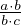
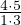
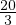
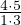
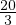
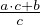

÷ = ⋅ = .
Täisarvu jagamiseks hariliku murruga teisendatakse täisarv kõigepealt harilikuks murruks ja siis jagatakse. Näiteks 4 ÷ = ⋅
 =  =  = 6.
=  =  = 6.Arvu kujul a jagamiseks hariliku murruga või antud arvuga jagamiseks teisendatakse kõigepealt antud arv liigmurruks, kujule  ja alles siis jagatakse.
Näiteks